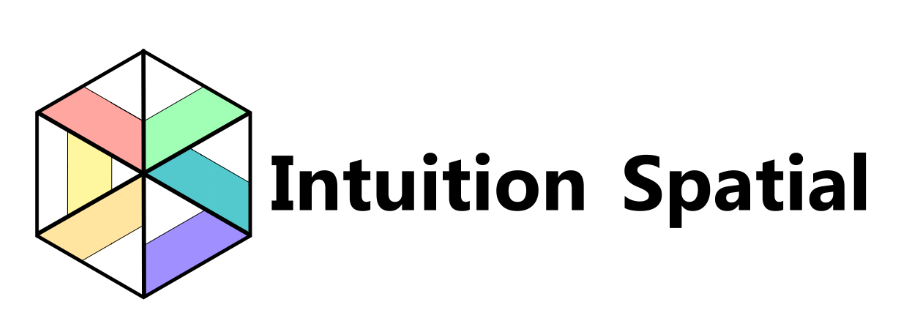

Spatial Mapping
Capture accurate geometry and semantic data from physical environments for planning, modeling, and navigation.

Welcome to Intuition Spatial
We design spatial mapping solutions, augmented reality visualization, and data-driven site intelligence for teams that need deeper understanding of the built environment.
Visualize and optimize real-world spaces with precise mapping and powerful analytics.
What we do
Capture accurate geometry and semantic data from physical environments for planning, modeling, and navigation.
Overlay digital insights on real spaces with immersive AR experiences for training, visualization, and engagement.
Turn location-aware data into actionable intelligence for operations, safety, and design optimization.
About us
Intuition Spatial combines spatial science, design, and software engineering to make spaces easier to understand, manage, and use. We partner with teams who need intuitive mapping, immersive visualization, and reliable spatial insight.
Get in touch
Send us a message and we’ll help you connect the digital and physical worlds with spatial intelligence.
hello@intuitionspatial.com